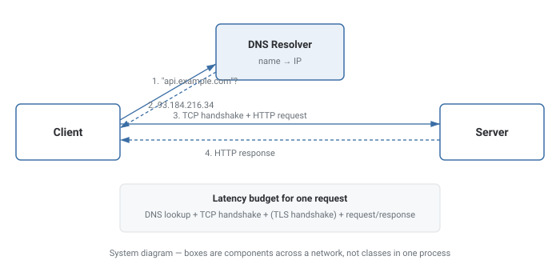

HLD Fundamentals
The client-server model, DNS, HTTP, and the difference between latency and throughput — the vocabulary every other HLD topic builds on.
Theory
The client-server model
Almost everything in system design sits on top of one basic shape: a client sends a request, a server does some work and sends back a response. The client is usually the thing initiating contact (a browser, a mobile app, another service), and the server is the thing that owns some resource or capability the client wants. This is deliberately asymmetric — the server doesn't know a client exists until that client reaches out, and a single server can be reached by many different clients over time. Almost every "bigger" pattern in system design (load balancers, caches, databases, message queues) is really just refining or scaling this one basic request/response relationship.
How a client actually finds a server: DNS
A client doesn't usually know a server's raw network address (its IP address) up front — it knows a human-readable name, like api.example.com. DNS (Domain Name System) is the system that translates that name into an IP address. When a client wants to talk to api.example.com, it first asks a DNS resolver "what's the IP for this name?", gets back something like 93.184.216.34, and only then opens an actual network connection to that IP. This lookup is usually cached for a while (controlled by a TTL — time to live) so the same translation doesn't have to be repeated for every single request.
Set a DNS TTL that matches how often the underlying IP is actually expected to change — don't leave it at a default value without thinking about failover speed.
Assuming DNS changes take effect immediately everywhere — cached entries at resolvers and clients can keep serving the old IP until their TTL expires.
What HTTP actually is
Once a client has an IP address, it needs an agreed-upon format for the request and response — that's HTTP. HTTP is a request/response protocol: a request has a method (GET, POST, PUT, DELETE...), a path, headers, and optionally a body; a response has a status code (200, 404, 500...), headers, and optionally a body. Underneath HTTP sits TCP, which handles the actual reliable delivery of bytes over the network — HTTP doesn't have to worry about packet loss because TCP already solved that problem one layer down.
Latency vs. throughput
These two numbers get conflated constantly, but they measure genuinely different things. Latency is how long a single request takes, from the moment it's sent to the moment the response arrives — measured in milliseconds. Throughput is how many requests a system can handle per unit of time — measured in requests per second. A system can have low latency but low throughput (a single fast worker handling one request at a time) or high latency but high throughput (many slow workers running in parallel, so lots of total work gets done even though each individual request takes a while). Most real system-design trade-offs eventually come down to which of the two actually matters more for the use case at hand.
Diagram

Trade-offs
- The user is actively waiting on the response (a page load, an autocomplete suggestion, a payment confirmation).
- Each individual request matters more than the aggregate volume of requests.
- You're processing a large backlog where no single item is time-sensitive (batch analytics, bulk email, log processing).
- The system's value comes from total work completed over time, not the speed of any one unit.
What interviewers are actually listening for: being able to state, concretely, what latency and throughput actually measure — not just "one is speed, one is volume" — and give an example of a system tuned for one at the expense of the other. Also, understanding that a request's full latency budget includes DNS lookup + TCP handshake + TLS handshake (if HTTPS) + the actual request/response, not just server processing time.
Real-World Examples
- Every web page load — the browser resolves a domain via DNS, opens a TCP connection, sends an HTTP request, and renders whatever comes back.
- CDN edge resolution — Cloudflare and CloudFront use DNS itself to route a client to the nearest server, folding load-balancing into the DNS lookup step.
- Mobile apps under poor network conditions — apps explicitly design around latency (optimistic UI) because round-trip time on cellular networks can be hundreds of milliseconds.
- Batch data pipelines (Spark jobs, nightly ETL) — explicitly optimized for throughput, accepting slower individual records as long as the total volume clears the batch window.
- Real-time trading systems — obsessively optimized for latency, where microseconds of round-trip time can matter more than total trade volume.
Interview Questions
Click a question to reveal the answer.
Walk through what happens between typing a URL and seeing the page.
The browser first checks its DNS cache, then queries a DNS resolver to translate the hostname into an IP address if needed. It opens a TCP connection to that IP (a three-way handshake), performs a TLS handshake if the connection is HTTPS, sends an HTTP request over that connection, and waits for the server's HTTP response, which it then parses and renders.
What's the difference between latency and throughput, concretely?
Latency is the time for a single request to complete, start to finish (milliseconds). Throughput is how many requests a system can process per unit of time (requests/second). A system can be tuned to minimize one at the expense of the other — batching many requests together often improves throughput but increases the latency of any individual request in the batch.
Why does DNS use a TTL, and what's the trade-off in setting it?
A TTL tells clients/resolvers how long they may cache a DNS answer before re-querying. A longer TTL reduces DNS query volume and average latency, but slows how quickly clients notice an IP change (e.g., during failover). A shorter TTL makes changes propagate faster at the cost of more frequent lookups.
Why is TCP relevant to HTTP even though HTTP doesn't mention packets or retransmission?
Because HTTP is layered on top of TCP, which already guarantees reliable, ordered delivery of bytes. HTTP's request/response model only has to think in terms of "send these bytes, receive those bytes" — TCP silently handles retransmitting lost packets and keeping everything in order underneath.
Code & Output
This is a real TCP client-server pair — not a simulation. The client sends 5 sequential pings over an actual socket connection to a server running on 127.0.0.1, measuring genuine round-trip latency for each one, then computes average latency and throughput. Unlike the design-pattern examples elsewhere in this guide, the exact millisecond values shown below are real measurements from one run on this machine — running it yourself will produce different (but similarly-shaped) numbers, since real network/OS timing is never perfectly repeatable.